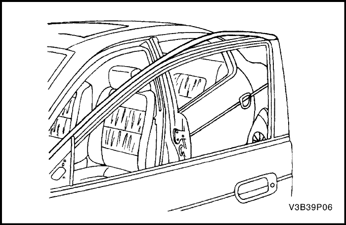

SECCIÓN 9P
PUERTAS
Precaución: Desconecte el cable negativo de la batería antes de desmontar o instalar cualquier unidad eléctrica o cuando exista la posibilidad de que una herramienta o equipo pueda entrar en contacto con bornes eléctricos expuestos. La desconexión de dicho cable ayudará a evitar lesiones personales y daños al vehículo. La llave de contacto debe estar en posición LOCK a menos que se indique lo contrario.
ESPECIFICACIONES
Especificaciones de apriete de la sujeción
| Aplicación | N•m | Árbol de transmisión izquierdo | Articulación |
| Tornillos de fijación de la bisagra de la puerta a la carrocería | 27.5 | 20 | - |
| Tornillos de fijación de la bisagra a la puerta | 36 | 27 | - |
| Tornillo de fijación de la varilla para mantener abierta la puerta a la carrocería | 25 | 18 | - |
| Tornillos de fijación de la varilla para mantener abierta la puerta a la puerta | 9 | - | 80 |
| Tornillos del cerradero de la puerta | 30 | 22 | - |
| Tornillo de la cerradura de la puerta delantera | 10 | - | 89 |
| Tornillo de la moldura exterior del canal | 1.3 | - | 12 |
| Tornillo de tapa de tirador exterior de puerta | 4,5 | - | 40 |
| Tornillo de soporte de tirador exterior de puerta | 3 | - | 27 |
| Pernos del carril guía de la puerta trasera | 10 | - | 89 |
| Tornillo del carril guía de la puerta trasera | 4 | - | 35 |
| Tornillos de la cerradura de la puerta trasera | 10 | - | 89 |
| Tuercas del elevalunas | 10 | - | 89 |
DIAGRAMAS DE ESQUEMAS Y DIRECCIONES
Cierres de puerta eléctricos
Conducción a izquierdas
Conducción a derechas (excepto Holden)
Conducción a derechas (sólo Holden)
Conducción a derechas (Diesel)
Elevalunas eléctrico del conductor
Conducción a izquierdas
Conducción a derechas (sólo Holden)
Elevalunas eléctrico de seguridad del conductor
Conducción a izquierdas
Conducción a derechas (excepto Holden)
Elevalunas eléctrico del pasajero y trasero
Conducción a izquierdas
Conducción a derechas
Conducción a derechas (Diesel)
DIAGNÓSTICO
Cierres de puerta eléctricos
Las cerraduras eléctricas no funcionan en ninguna puerta
| Paso | Medida | Valor(es) | Sí | No |
| 1 | Utilice un ohmímetro para comprobar la continuidad entre el terminal A5 (azul claro) del conector de la ISU y masa. ¿Indica el ohmímetro el valor especificado? | ≈ 0 Ω | Vaya al Paso 3 | Vaya al Paso 2 |
| 2 | Repare el circuito abierto entre el terminal A5 (azul claro) del conector de la ISU y masa. ¿Se ha realizado la reparación? | - | Sistema OK | - |
| 3 | - Desenchufe el conector de la ISU.
- Conecte un cable puente con fusible al terminal positivo de la batería.
- Conecte otro puente a masa.
- Fije el puente del terminal positivo de la batería al terminal D6 (GRS) del conector de la ISU.
- Fije el puente conectado a masa al terminal D5 (MRN) del conector de la ISU.
- Cambie la conexión de los puentes, de forma que el puente del terminal positivo de la batería quede conectado al terminal D5 (MRN) y el puente conectado a masa quede conectado al terminal D6 (GRS).
¿Funciona la ISU cuando se aplica corriente y masa a los terminales D6 y D5 del conector de la ISU? | - | Vaya al Paso 5 | Vaya al Paso 4 |
| 4 | Repare el circuito abierto entre el conector de la ISU y el conector del actuador de la cerradura. ¿Se ha realizado la reparación? | - | Sistema OK | - |
| 5 | - Suba la ventanilla del conductor con el elevalunas eléctrico.
- Desenchufe el conector de la cerradura de la puerta de la parte superior de la cerradura. (Hay tres conectores en la cerradura de la puerta. Consulte el esquema para verificar el conector correcto.)
- Utilice un ohmímetro para comprobar la continuidad entre el terminal A10 (NGR) del conector del interruptor de la cerradura de la puerta izquierda y masa.
¿Indica el ohmímetro el valor especificado? | ≈ 0 Ω | Vaya al Paso 7 | Vaya al Paso 6 |
| 6 | Repare el circuito abierto entre el terminal A10 (NGR) del conector del interruptor de la cerradura de la puerta izquierda y masa. ¿Se ha realizado la reparación? | - | Sistema OK | - |
| 7 | - Asegúrese de que esté bien enchufado el conector de la ISU.
- Ponga en contacto un puente conectado a masa con el terminal B4 (AZL CL) del conector desenchufado del interruptor de la cerradura de puerta izquierda.
- Retire el puente conectado a masa y conéctelo al terminal B5 (AZL CL/BCO) del conector desenchufado del interruptor de la cerradura de la puerta izquierda.
¿Se abren y se cierran las puertas cuando los terminales B5 y B4 se conectan alternativamente a masa? | ≈ 0 Ω | Vaya al Paso 8 | Vaya al Paso 9 |
| 8 | - Asegúrese de que todas las varillas estén conectadas a la cerradura de la puerta del conductor.
- Si no se localiza ninguna varilla desconectada, sustituya la cerradura de la puerta del conductor con el interruptor integral de dicha cerradura. (No confunda la cerradura de la puerta con el bombín de la cerradura. La cerradura de la puerta tiene tres conectores: el del interruptor de la cerradura, el solenoide de la cerradura y el interruptor de contacto de la puerta. Consulte el esquema para verificar el conector correcto.)
¿Se ha realizado la reparación? | - | Sistema OK | - |
| 9 | Utilice un ohmímetro para comprobar la continuidad entre el terminal B4 (AZL CL) del conector desenchufado del interruptor de la cerradura de la puerta izquierda y el terminal A5 (AZL CL) del conector de la ISU. ¿Indica el ohmímetro el valor especificado? | ≈ 0 Ω | Vaya al Paso 11 | Vaya al Paso 10 |
| 10 | Repare el cable AZL CL abierto. ¿Se ha realizado la reparación? | - | Sistema OK | - |
| 11 | Utilice un ohmímetro para comprobar la continuidad entre el terminal B5 (BCO) del conector desenchufado del interruptor de la cerradura de la puerta izquierda y el terminal A6 (BCO) del conector de la ISU. ¿Indica el ohmímetro el valor especificado? | ≈ 0 Ω | Vaya al Paso 13 | Vaya al Paso 12 |
| 12 | Repare el cable BCO abierto. ¿Se ha realizado la reparación? | - | Sistema OK | - |
| 13 | Sustituya la ISU. ¿Se ha realizado la reparación? | - | Sistema OK | Vaya al Paso 14 |
| 14 | - Suba la ventanilla del conductor con el elevalunas eléctrico.
- Desenchufe el conector de la cerradura de la puerta de la parte superior de la cerradura. (Hay tres conectores en la cerradura de la puerta. Consulte el esquema para verificar el conector correcto.)
- Utilice un ohmímetro para comprobar la continuidad entre el terminal 6 (NGR) del conector del interruptor de la cerradura de la puerta derecha y masa.
¿Indica el ohmímetro el valor especificado? | ≈ 0 Ω | Vaya al Paso 16 | Vaya al Paso 15 |
| 15 | Repare el circuito abierto entre el terminal 6 (NGR) del conector del interruptor de la cerradura de la puerta derecha y masa. ¿Se ha realizado la reparación? | - | Sistema OK | - |
| 16 | - Asegúrese de que esté bien enchufado el conector de la ISU.
- Ponga en contacto un puente conectado a masa con el terminal 5 (AZL CL) del conector desenchufado del interruptor de la cerradura de puerta derecha.
- Retire el puente conectado a masa y conéctelo al terminal 7 (BCO) del conector desenchufado del interruptor de la cerradura de la puerta derecha.
¿Se abren y se cierran las puertas cuando los terminales 7 y 5 se conectan alternativamente a masa? | - | Vaya al Paso 17 | Vaya al Paso 18 |
| 17 | - Asegúrese de que todas las varillas estén conectadas a la cerradura de la puerta del pasajero.
- Si no se localiza ninguna varilla desconectada, sustituya la cerradura de la puerta del conductor con el interruptor integral de dicha cerradura. (No confunda la cerradura de la puerta con el bombín de la cerradura. La cerradura de la puerta tiene tres conectores: el del interruptor de la cerradura, el solenoide de la cerradura y el interruptor de contacto de la puerta. Consulte el esquema para verificar el conector correcto.)
¿Se ha realizado la reparación? | - | Sistema OK | - |
| 18 | Utilice un ohmímetro para comprobar la continuidad entre el terminal 5 (AZL CL) del conector desenchufado del interruptor de la cerradura de la puerta derecha y el terminal A5 (AZL CL) del conector de la ISU. ¿Indica el ohmímetro el valor especificado? | ≈ 0 Ω | Vaya al Paso 20 | Vaya al Paso 19 |
| 19 | Repare el cable AZL CL abierto. ¿Se ha realizado la reparación? | - | Sistema OK | - |
| 20 | Utilice un ohmímetro para comprobar la continuidad entre el terminal 7 (BCO) del conector desenchufado del interruptor de la cerradura de la puerta derecha y el terminal A6 (BCO) del conector de la ISU. ¿Indica el ohmímetro el valor especificado? | - | Sistema OK | - |
Ventanillas eléctricas
Los elevalunas eléctricos no funcionan
| Paso | Medida | Valor(es) | Sí | No |
| 1 | - Asegúrese de que el interruptor de bloqueo del elevalunas, situado en la puerta del conductor, no esté activado.
- Compruebe cada uno de los elevalunas eléctricos.
¿Funcionan todos los elevalunas eléctricos? | - | Vaya al Paso 7 | Vaya al Paso 2 |
| 2 | - En la puerta del conductor, quite el tornillo de fijación del interruptor del elevalunas eléctrico/espejo retrovisor eléctrico.
- Levante el interruptor del elevalunas eléctrico para dejar expuesto el conector.
- Gire la llave de contacto a la posición ON.
- Compruebe la tensión en el terminal A6 (NRJ) del interruptor del elevalunas eléctrico.
¿El valor de la tensión es el mismo que el especificado? | 11-14 V | Vaya al Paso 4 | Vaya al Paso 3 |
| 3 | Repare el circuito de alimentación de corriente abierto del interruptor del elevalunas eléctrico de la puerta del conductor. ¿Se ha realizado la reparación? | - | Sistema OK | - |
| 4 | Utilice un ohmímetro para comprobar la continuidad entre el terminal A10 (NGR) del conector del interruptor del elevalunas eléctrico de la puerta del conductor. ¿Indica el ohmímetro el valor especificado? | ≈ 0 Ω | Vaya al Paso 6 | Vaya al Paso 5 |
| 5 | Repare el circuito abierto entre masa y el terminal A10 (NGR) del conector del interruptor del elevalunas eléctrico del conductor. ¿Se ha realizado la reparación? | - | Sistema OK | - |
| 6 | Sustituya el interruptor del elevalunas eléctrico de la puerta del conductor. ¿Se ha realizado la reparación? | - | Sistema OK | - |
| 7 | - En la puerta en la que no funciona el elevalunas eléctrico, desmonte el panel de guarnecido de la puerta.
- Conecte un cable puente con fusible al terminal positivo de la batería.
- Conecte otro puente al terminal negativo de la batería.
- Desenchufe el conector de dos cables que conecta el motor del elevalunas eléctrico al cableado de la puerta.
- Conecte el puente negativo a uno de los terminales del conector de dos cables.
- Conecte el puente positivo al otro terminal del conector de dos cables.
- Invierta la conexión de los puentes.
¿Sube la ventanilla cuando el motor recibe corriente directamente de la batería y baja cuando se invierten las conexiones de los puentes? | - | Vaya al Paso 9 | Vaya al Paso 8 |
| 8 | Sustituya el motor del elevalunas. ¿Se ha realizado la reparación? | - | Sistema OK | - |
| 9 | Compruebe el funcionamiento de los elevalunas. ¿Es el elevalunas del conductor el único que no funciona? | - | Vaya al Paso 10 | Vaya al Paso 11 |
| 10 | Sustituya el interruptor del elevalunas eléctrico de la puerta del conductor. ¿Se ha realizado la reparación? | - | Sistema OK | - |
| 11 | - Asegúrese de que el interruptor de bloqueo del elevalunas, situado en la puerta del conductor, no esté activado.
- Gire la llave de contacto a la posición ON.
- Compruebe, por la parte trasera, la tensión en el terminal A9 (ROS/BCO) del interruptor del elevalunas eléctrico de la puerta del conductor.
¿El valor de la tensión es el mismo que el especificado? | 11-14 V | Vaya al Paso 12 | Vaya al Paso 10 |
| 12 | - Asegúrese de que el interruptor de bloqueo del elevalunas, situado en la puerta del conductor, no esté activado.
- Gire la llave de contacto a la posición ON.
- Compruebe la tensión en el terminal A9 (RSA/BCO) del conector del interruptor del elevalunas que no funciona.
¿El valor de la tensión es el mismo que el especificado? | 11-14 V | Vaya al Paso 14 | Vaya al Paso 13 |
| 13 | Repare el cable (RSA/BCO) abierto entre el interruptor del elevalunas y el interruptor del elevalunas de la puerta del conductor. ¿Se ha realizado la reparación? | - | Sistema OK | - |
| 14 | Use un ohmímetro en el interruptor de la ventanilla que no funcione para comprobar la continuidad entre masa y el terminal 4 (interruptor de la ventanilla del pasajero: 6) Cuando se realizan las comprobaciones anteriores, ¿indica el ohmímetro el valor especificado? | ≈ 0 Ω | Vaya al Paso 15 | Vaya al Paso 16 |
| 15 | Sustituya el interruptor del elevalunas eléctrico. ¿Se ha realizado la reparación? | - | Sistema OK | - |
| 16 | Si uno de los cables del interruptor del elevalunas comprobado en el Paso 15 no muestra continuidad con masa, utilice un ohmímetro para comprobar la continuidad de ese cable entre el interruptor del elevalunas y el interruptor del elevalunas de la puerta del conductor. ¿Indica el ohmímetro el valor especificado? | ≈ 0 Ω | Vaya al Paso 17 | Vaya al Paso 18 |
| 17 | Sustituya el interruptor del elevalunas que no funciona. ¿Se ha realizado la reparación? | - | Sistema OK | - |
| 18 | Repare el circuito abierto entre el interruptor del elevalunas y el interruptor del elevalunas de la puerta del conductor. ¿Se ha realizado la reparación? | - | Sistema OK | - |
Reprogramación de motores de ventanillas
El conjunto del motor de la ventanilla del lado del conductor está diseñado para memorizar los pasos de cierre y apertura.
Si se ha sustituido o vuelto a montar el conjunto del motor de la ventanilla del lado del conductor, debe reprogramarse una vez para que la función de seguridad funcione correctamente. Esto puede hacerse accionando el interruptor de la ventanilla del lado del conductor. Si no se realiza el procedimiento de reprogramación, la ventanilla del lado del conductor no se cierra automáticamente.
En los siguientes pasos se explica la forma de reprogramar el conjunto del motor de la ventanilla del lado del conductor.
- Pulse el interruptor de la ventanilla del lado del conductor hasta que la ventanilla esté a 100 mm de la parte superior de su marco.
- Ponga el interruptor de la ventanilla en la primera posición hacia arriba y manténgalo hasta que la ventanilla suba del todo.
Importante: No ponga el interruptor de la ventanilla en la segunda posición hacia arriba.
- Tras detenerse el motor de la ventanilla, mantenga el interruptor aproximadamente 3 segundos.
- El conjunto del motor de la ventanilla del lado del conductor ya está programado para la función de seguridad.
- Confirme el procedimiento de reprogramación subiendo la ventanilla automáticamente.
MANTENIMIENTO Y REPARACIÓN
servicio con vehículo en marcha


Moldura del canal exterior
(Se muestra la puerta delantera, puerta trasera similar)
Procedimiento de desmontaje
- Baje la ventanilla completamente. Si fuera necesario, quite el cristal de la ventanilla. Consulte la Sección 9L, Lunas y espejos.
- Desmonte el espejo retrovisor exterior. Consulte la Sección 9L, Lunas y espejos.
- Desmonte el panel de guarnecido de la puerta. Consulte la Sección 9G, Guarnecido interior.
- Coloque el tornillo de la moldura exterior del canal.
- Levante la moldura exterior del canal para separarla completamente de la puerta.
procedimiento de montaje
- Presione la moldura exterior del canal sobre la puerta.
Aviso: Metales distintos en contacto directo pueden corroerse rápidamente. Asegúrese de utilizar los elementos de sujeción correctos para evitar una corrosión prematura.
- Coloque el tornillo de la moldura exterior del canal.
Apretar
Apriete el tornillo de la moldura exterior del canal hasta 1,3 N•m 12 (lb-pulg.).
- Monte el panel de guarnecido de la puerta. Consulte la Sección 9G, Guarnecido interior.
- Monte el espejo retrovisor exterior. Consulte la Sección 9L, Lunas y espejos.
- Suba la ventanilla.
Funcionamiento del cristal de la puerta delantera
Procedimiento de desmontaje
- Desmonte el espejo retrovisor exterior. Consulte la Sección 9L, Lunas y espejos.
- Desmonte el cristal de la puerta delantera. Consulte la Sección 9L, Lunas y espejos.
- Desmonte el canal guía del cristal.

procedimiento de montaje
- Monte el canal guía del cristal.
- Monte el cristal de la puerta delantera. Consulte la Sección 9L, Lunas y espejos.
- Monte el espejo retrovisor exterior. Consulte la Sección 9L, Lunas y espejos.
Burlete de la puerta
(Se muestra la puerta delantera, puerta trasera similar)
Procedimiento de desmontaje
- Quite el tornillo de fijación de la varilla para mantener abierta la puerta a la carrocería y desmonte dicha varilla.
- Desmonte el burlete de la puerta.
procedimiento de montaje
- Monte el burlete de la puerta.
Aviso: Metales distintos en contacto directo pueden corroerse rápidamente. Asegúrese de utilizar los elementos de sujeción correctos para evitar una corrosión prematura.
- Monte la varilla para mantener abierta la puerta en la carrocería con su tornillo.
Apretar
Apriete el tornillo de fijación de la varilla para mantener abierta la puerta a la carrocería hasta 25 N•m (18 lb-pie).

Funcionamiento de cristal de puerta trasera
Procedimiento de desmontaje
- Desmonte el cristal de la puerta trasera. Consulte la Sección 9L, Lunas y espejos.
- Desmonte el canal guía del cristal de la puerta trasera.
procedimiento de montaje
- Monte el canal guía del cristal de la puerta trasera.
- Monte el cristal de la puerta trasera. Consulte la Sección 9L, Lunas y espejos.

Burlete auxiliar de la puerta delantera
Procedimiento de desmontaje
- Desmonte el espejo retrovisor exterior. Consulte la Sección 9L, Lunas y espejos.
- Desmonte el burlete secundario de la puerta delantera.
procedimiento de montaje
- Monte el burlete secundario de la puerta delantera.
- Monte el espejo retrovisor exterior. Consulte la Sección 9L, Lunas y espejos.
Burlete auxiliar de puerta trasera
Procedimiento de desmontaje
- Desmonte el burlete secundario de la puerta trasera.
procedimiento de montaje
- Monte el burlete secundario de la puerta trasera.
Burlete de la apertura de puerta delantera
Procedimiento de desmontaje
- Desmonte el panel de defensa, el panel de estribera delantero y el panel de guarnecido del montante B inferior. Consulte la Sección 9G, Guarnecido interior.
- Desmonte el burlete de la abertura de la puerta delantera.
procedimiento de montaje
- Monte el burlete de la abertura de la puerta delantera.
- Monte el panel de defensa, el panel de estribera delantero y el panel de guarnecido del montante B inferior. Consulte la Sección 9G, Guarnecido interior.
Burlete de apertura de puerta trasera
Procedimiento de desmontaje
- Desmonte el panel de estribera trasero y el panel de guarnecido del montante B inferior. Consulte la Sección 9G, Guarnecido interior.
- Desmonte el burlete de la abertura de la puerta trasera.
procedimiento de montaje
- Monte el burlete de la abertura de la puerta trasera.
- Monte el panel de estribera trasero y el panel de guarnecido del montante B inferior. Consulte la Sección 9G, Guarnecido interior.
Tapizado hermético de la puerta
(Se muestra la puerta delantera, puerta trasera similar)
Procedimiento de desmontaje
- Desmonte el panel de guarnecido de la puerta. Consulte la Sección 9G, Guarnecido interior.
- Desmonte el guarnecido de estanqueidad de la puerta.
procedimiento de montaje
- Monte el guarnecido de estanqueidad de la puerta.
- Monte el panel de guarnecido de la puerta. Consulte la Sección 9G, Guarnecido interior.

Cebador de bloqueo de la puerta
(Se muestra la puerta delantera, puerta trasera similar)
Procedimiento de desmontaje
- Quite los tornillos y desmonte el cerradero de la puerta. (Se muestra la puerta delantera, puerta trasera similar.)
procedimiento de montaje
Aviso: Metales distintos en contacto directo pueden corroerse rápidamente. Asegúrese de utilizar los elementos de sujeción correctos para evitar una corrosión prematura.
- Coloque los tornillos y monte el cerradero de la puerta.
Apretar
Apriete los tornillos del cerradero de la puerta hasta 24 N•m (18 lb-pie).
Ajuste del cebador de bloqueo de la puerta
(Se muestra la puerta delantera, puerta trasera similar)
El trinquete de la cerradura de la puerta consiste en un cerradero con dos tornillos roscados en una placa soporte flotante situada en los correspondientes montantes de la carrocería. Esta placa soporte flotante permite que se ajuste el cerradero con facilidad hacia adentro y hacia afuera, hacia arriba y hacia abajo.
La puerta queda asegurada en posición de cierre cuando la horquilla de la cerradura salta y engancha el cerradero.
Aviso: El trinquete de la cerradura (cerradero) de la puerta es una pieza de fijación importante que puede afectar el rendimiento de componentes vitales del sistema, por lo que puede causar gastos de reparación importantes. Si su sustitución llega a ser necesaria, el trinquete de la cerradura de la puerta debe sustituirse por una que tenga la misma referencia de pieza o por una equivalente. No utilice una pieza de repuesto de menor calidad o un diseño sustituto. Los valores de par especificados deben aplicarse durante el montaje para garantizar la sujeción correcta de la pieza.
Ajuste hacia arriba/hacia abajo y hacia afuera/hacia adentro
Tal vez haya que ajustar el cerradero hacia arriba y hacia abajo o hacia adentro y hacia afuera por diversas razones:
- Daños en el bastidor del vehículo a consecuencia de una colisión.
- Montaje de un burlete de la puerta nuevo.
- Reclamaciones del cliente por exceso de ruido de viento.
- Dificultad a la hora de abrir y cerrar la puerta.
Para ajustar el cerradero hacia arriba y hacia abajo o hacia adentro y hacia afuera, ejecute el siguiente procedimiento:
- La puerta debe estar correctamente alineada.
- Afloje los tornillos del cerradero.
- La placa soporte flotante puede desplazarse levemente utilizando los extremos de los tornillos del cerradero. Desplace la placa soporte flotante a la posición deseada.
- Si para llevar a cabo un ajuste correcto es necesario desplazar la placa soporte flotante más allá de lo posible, utilice un taladro eléctrico y una broca de lima giratoria de 3/8 de pulgada con extremo plano para ampliar la abertura de la carrocería en la dirección deseada.
Aviso: Es importante utilizar una broca con extremo plano para no dañar la placa soporte flotante roscada. Los tornillos del cerradero y la placa soporte flotante roscada son piezas importantes que podrían afectar el rendimiento de los componentes y sistemas.
- Apriete los tornillos del cerradero de la puerta en la posición correcta.
- Apriete los tornillos del cerradero de la puerta en la posición correcta.
Apretar
Apriete los tornillos del cerradero de la puerta hasta 24 N•m (18 lb-pie).
Puerta delantera Cierre
Procedimiento de desmontaje
- Desconecte el cable negativo de la batería.
- Desmonte el guarnecido de estanqueidad de la puerta. Consulte el apartado "Guarnecido de estanqueidad de la puerta" de esta sección.
- Quite los tornillos y desmonte la cerradura de la puerta delantera.
- Desconecte las varillas de la cerradura.
- Desenchufe el conector eléctrico.
procedimiento de montaje
- Enchufe el conector eléctrico.
- Conecte las varillas de la cerradura.
Aviso: Metales distintos en contacto directo pueden corroerse rápidamente. Asegúrese de utilizar los elementos de sujeción correctos para evitar una corrosión prematura.
- Coloque la cerradura de la puerta delantera con sus tornillos.
Apretar
Apriete el tornillo de la cerradura de la puerta delantera hasta 10 N•m (89 lb-pulg.)
- Monte el guarnecido de estanqueidad de la puerta. Consulte el apartado "Guarnecido de estanqueidad de la puerta" de esta sección.
- Conecte el cable negativo de la batería.
Cierre de seguridad infantil de puerta trasera
Procedimiento de desmontaje
- Desconecte el cable negativo de la batería.
- Desmonte el guarnecido de estanqueidad de la puerta. Consulte el apartado "Guarnecido de estanqueidad de la puerta" de esta sección.
- Quite los tornillos y desmonte la cerradura de la puerta trasera.
- Desconecte las varillas de la cerradura.
- Desenchufe el conector eléctrico.
procedimiento de montaje
- Enchufe el conector eléctrico.
- Conecte las varillas de la cerradura.
Aviso: Metales distintos en contacto directo pueden corroerse rápidamente. Asegúrese de utilizar los elementos de sujeción correctos para evitar una corrosión prematura.
- Monte la cerradura de la puerta trasera con sus tornillos.
Apretar
Apriete los tornillos de la cerradura de la puerta trasera hasta 10 N•m (89 lb-pulg.).
- Monte el guarnecido de estanqueidad de la puerta. Consulte el apartado "Guarnecido de estanqueidad de la puerta" de esta sección.
- Conecte el cable negativo de la batería.
Manilla interior de la puerta
(Se muestra la puerta delantera, puerta trasera similar)
Procedimiento de desmontaje
- Desmonte el panel de guarnecido de la puerta. Consulte la Sección 9G, Guarnecido interior.
- Desmonte el tirador interior de la puerta del panel de guarnecido.
procedimiento de montaje
- Monte el tirador interior en las ranuras del panel de guarnecido de la puerta.
- Monte el panel de guarnecido de la puerta. Consulte la Sección 9G, Guarnecido interior.
Tirador exterior de puerta delantera
Procedimiento de desmontaje
- Desmonte el guarnecido de estanqueidad de la puerta. Consulte el apartado "Guarnecido de estanqueidad de la puerta" de esta sección.
- Desconecte el tirador exterior de la puerta y las varillas de la cerradura.
- Quite el tornillo que sujeta la tapa del tirador exterior de la puerta.
- Quite el tornillo que sujeta el soporte del tirador exterior de la puerta.
- Retire la tapa del tirador exterior de la puerta.
- Deslice la manilla del tirador exterior de la puerta hacia atrás y extráigala.
- Desmonte el soporte del tirador exterior de la puerta.
procedimiento de montaje
- Monte el soporte del tirador exterior de la puerta.
- Monte la manilla del tirador exterior de la puerta.
- Monte la tapa del tirador exterior de la puerta.
- Coloque el tornillo que sujeta el soporte del tirador exterior de la puerta.
Apretar
Apriete el tornillo que sujeta el soporte del tirador exterior de la puerta hasta 3 N•m (27 lb-pulg.).
Aviso: Metales distintos en contacto directo pueden corroerse rápidamente. Asegúrese de utilizar los elementos de sujeción correctos para evitar una corrosión prematura.
- Coloque el tornillo que sujeta la tapa del tirador exterior de la puerta.
Apretar
Apriete el tornillo que sujeta la tapa del tirador exterior de la puerta hasta 4,5 N•m (40 lb-pulg.).
- Conecte el tirador exterior de la puerta y las varillas de la cerradura.
- Monte el guarnecido de estanqueidad de la puerta. Consulte el apartado "Guarnecido de estanqueidad de la puerta" de esta sección.
Tirador exterior de puerta trasera
Procedimiento de desmontaje
- Desmonte el guarnecido de estanqueidad de la puerta. Consulte el apartado "Guarnecido de estanqueidad de la puerta" de esta sección.
- Desmonte la cerradura de la puerta trasera. Consulte el apartado "Cerradura de seguridad para niños de las puertas traseras" de esta sección.
- Quite el tornillo que sujeta la tapa del tirador exterior de la puerta.
- Quite el tornillo que sujeta el soporte del tirador exterior de la puerta.
- Retire la tapa del tirador exterior de la puerta.
- Deslice la manilla del tirador exterior de la puerta hacia atrás y extráigala.
- Desmonte el soporte del tirador exterior de la puerta.
procedimiento de montaje
- Monte el soporte del tirador exterior de la puerta.
- Monte la manilla del tirador exterior de la puerta.
- Monte la tapa del tirador exterior de la puerta.
- Coloque el tornillo que sujeta el soporte del tirador exterior de la puerta.
Apretar
Apriete el tornillo que sujeta el soporte del tirador exterior de la puerta hasta 3 N•m (27 lb-pulg.).
Aviso: Metales distintos en contacto directo pueden corroerse rápidamente. Asegúrese de utilizar los elementos de sujeción correctos para evitar una corrosión prematura.
- Coloque el tornillo que sujeta la tapa del tirador exterior de la puerta.
Apretar
Apriete el tornillo que sujeta la tapa del tirador exterior de la puerta hasta 4,5 N•m (40 lb-pulg.).
- Monte la cerradura de la puerta trasera. Consulte el apartado "Cerradura de seguridad para niños de las puertas traseras" de esta sección.
- Monte el guarnecido de estanqueidad de la puerta. Consulte el apartado "Guarnecido de estanqueidad de la puerta" de esta sección.
Cilindro de bloqueo de la puerta
Procedimiento de desmontaje
- Retire la tapa del tirador exterior de la puerta. Consulte el apartado "Tirador exterior de puerta delantera" de esta sección.
- Desmonte el cilindro de la cerradura de la tapa del tirador exterior de la puerta.
procedimiento de montaje
- Monte el cilindro de la cerradura en la tapa del tirador exterior de la puerta.
- Monte la tapa del tirador exterior de la puerta. Consulte el apartado "Tirador exterior de puerta delantera" de esta sección.
Regulador de ventanillas eléctricas
(Se muestra la puerta delantera, puerta trasera similar)
Procedimiento de desmontaje
- Desconecte el cable negativo de la batería.
- Desmonte el guarnecido de estanqueidad de la puerta. Consulte el apartado "Guarnecido de estanqueidad de la puerta" de esta sección.
- Desmonte el cristal de la puerta. Consulte la Sección 9L, Lunas y espejos.
- Desenchufe el conector eléctrico.
- Quite las tuercas y desmonte el elevalunas eléctrico.
procedimiento de montaje
Aviso: Metales distintos en contacto directo pueden corroerse rápidamente. Asegúrese de utilizar los elementos de sujeción correctos para evitar una corrosión prematura.
- Monte el elevalunas eléctrico con sus tuercas.
Apretar
Apriete las tuercas del elevalunas hasta 10 N•m (89 lb-pulg.).
- Enchufe el conector eléctrico.
- Monte el cristal de la puerta. Consulte la Sección 9L, Lunas y espejos.
- Monte el guarnecido de estanqueidad de la puerta. Consulte el apartado "Guarnecido de estanqueidad de la puerta" de esta sección.
- Conecte el cable negativo de la batería.
Precaución: Si se ha sustituido el elevalunas eléctrico del lado del conductor, lleve a cabo el procedimiento de reprogramación del motor de la ventanilla.
Conjunto de puerta
Procedimiento de desmontaje
- Desconecte el cable negativo de la batería.
- Quite el tornillo y desmonte la varilla para mantener abierta la puerta de la carrocería. Consulte el apartado "Varilla para mantener abierta la puerta" de esta sección.
- Con la ayuda de otro técnico, quite los tornillos de la bisagra de la puerta y desmonte la puerta delantera. (Se muestra la puerta delantera, puerta trasera similar.)
- Desconecte el pasacables de goma de la puerta a la carrocería y el conector eléctrico.
procedimiento de montaje
- Enchufe el conector eléctrico y conecte el pasacables de goma de la puerta a la carrocería.
Aviso: Metales distintos en contacto directo pueden corroerse rápidamente. Asegúrese de utilizar los elementos de sujeción correctos para evitar una corrosión prematura.
- Con la ayuda de otro mecánico, sujete un poco la puerta delantera con los tornillos de la bisagra. (Se muestra la puerta delantera, puerta trasera similar.)
- Ajuste la puerta para que encaje correctamente.
Apretar
Apriete los tornillos de fijación de la bisagra de la puerta a la carrocería hasta 27,5 N•m (20 lb-pie).
- Monte la varilla para mantener abierta la puerta en la carrocería con su tornillo. Consulte el apartado "Varilla para mantener abierta la puerta" de esta sección.
- Conecte el cable negativo de la batería.
- Efectúe la prueba de infiltración de agua. Consulte la Sección 9I, "Infiltraciones de agua".
- Compruebe si oye ruido de viento. Consulte la Sección 9J, Ruido del viento.
Bisagra de la puerta
(Se muestra la puerta trasera, puerta delantera similar)
Procedimiento de desmontaje
- Con la ayuda de otro mecánico, quite los tornillos y desmonte la bisagra de la puerta y de la carrocería.
procedimiento de montaje
Aviso: Metales distintos en contacto directo pueden corroerse rápidamente. Asegúrese de utilizar los elementos de sujeción correctos para evitar una corrosión prematura.
- Con la ayuda de otro mecánico, monte la bisagra en la puerta y en la carrocería con los tornillos.
Apretar
- Apriete los tornillos de fijación de la bisagra de la puerta a la carrocería hasta 27,5 N•m (20 lb-pie).
- Apriete los tornillos de fijación de la bisagra a la puerta hasta 36 N•m (27 lb-pie).
Articulación para mantener la puerta abierta
(Se muestra la puerta delantera, puerta trasera similar)
Procedimiento de desmontaje
- Desmonte el guarnecido de estanqueidad de la puerta. Consulte el apartado "Guarnecido de estanqueidad de la puerta" de esta sección.
- Quite los tornillos de la puerta y la carrocería.
- Desmonte la varilla para mantener abierta la puerta.
procedimiento de montaje
Aviso: Metales distintos en contacto directo pueden corroerse rápidamente. Asegúrese de utilizar los elementos de sujeción correctos para evitar una corrosión prematura.
- Monte la varilla para mantener abierta la puerta con sus tornillos en la puerta y en la carrocería.
Apretar
Apriete el tornillo de fijación de la varilla para mantener abierta la puerta a la carrocería hasta 25 N•m (18 lb-pie).
Apriete los tornillos de fijación de la varilla para mantener abierta la puerta a la puerta hasta 9 N•m (80 lb-pulg.).
- Monte el guarnecido de estanqueidad de la puerta. Consulte el apartado "Guarnecido de estanqueidad de la puerta" de esta sección.
DESCRIPCIÓN GENERAL Y FUNCIONAMIENTO DEL SISTEMA
Cebador de bloqueo de la puerta
Los cerraderos de las puertas delanteras y traseras constan cada uno de un cerradero con dos tornillos roscados en una placa soporte flotante que hay en los montantes B y C. La puerta queda asegurada en posición de cierre cuando la horquilla de la cerradura salta y engancha el cerradero.
Cierre de seguridad infantil de puerta trasera
La cerradura de seguridad para niños de las puertas traseras evita que los pasajeros, en especial los niños, abran las puertas traseras del vehículo desde dentro.
Para activar estas cerraduras, desplace las palancas de las dos puertas traseras a la posición de bloqueo. A continuación, cierre las dos puertas. Los pasajeros de atrás no podrán abrir las puertas desde el interior del vehículo.
Para desactivar las cerraduras, desbloquee la puerta desde el interior del vehículo y abra la puerta desde el exterior. Desplace la palanca a la posición de desbloqueo. Ahora, la puerta trasera funcionará normalmente.
Cierres de puerta eléctricos
Las cerraduras eléctricas utilizan un solenoide que está situado en el interior de cada conjunto de cerradura. Las cerraduras de las puertas se activan mediante el actuador del tirador interior de la puerta o mediante el cilindro de la cerradura sólo en la puerta del conductor. Cuando se abre o se cierra la puerta del conductor mediante el actuador o el cilindro de la cerradura, se abren o se cierran todas las puertas a la vez.
Ventanillas eléctricas
Los elevalunas eléctricos se controlan mediante interruptores eléctricos situados en los paneles de las puertas y se accionan mediante un motor en cada elevalunas. Cada puerta tiene un interruptor para controlar su ventanilla, y la puerta del conductor tiene cuatro interruptores para controlar todas las ventanillas del vehículo. Los cristales se bajan pulsando el interruptor y se suben tirando del interruptor hacia arriba. La ventanilla dejará de moverse cuando se suelte el interruptor o cuando esté completamente abierta o cerrada.
La ventanilla del lado del conductor se abre y se cierra automáticamente. La ventanilla bajará al pulsar y soltar el interruptor y sólo se detendrá cuando se vuelva a accionar el interruptor o cuando la ventanilla esté completamente abierta. Al tirar y soltar el interruptor, la ventanilla se cierra totalmente. La función de seguridad está diseñada para detectar si se queda algún objeto atrapado entre el cristal y el marco de la ventanilla y para tomar las medidas adecuadas para evitar que eso suceda. La función de seguridad se controla mediante el conjunto del motor de la ventanilla del conductor que contiene el ECM, la memoria no volátil y el sensor de la ventanilla. Si se ha sustituido un conjunto de motor de ventanilla, debe reprogramarse el conjunto de repuesto.
La puerta del conductor también tiene un botón que, al pulsarlo, impide el funcionamiento de las ventanillas de la puerta de pasajero delantera o de las puertas traseras.
Modo mantenido
Cuando se gira la llave de contacto a la posición OFF, es posible el control del elevalunas eléctrico durante 30 segundos.
Durante estos 30 segundos, si se cierra la puerta del conductor, el control del elevalunas eléctrico permanece activado (modo mantenido), pero es desactivado si se abre la puerta.